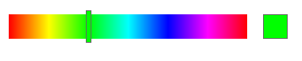

3. Functions¶
Functions allow modular design and reusability of program components. Functions should be designed to perform a well-defined, specific task. Functions should be designed so that they are not inter-dependent on code external to the function and so that they don’t cause unintended side-effects to code outside of the function.
3.1. Function Syntax¶
When writing a code for function, the following components define the syntax of a function definition.
returnType functionName( int arg1, float arg2){ // int and float parameter arguments
// body code of a function
}
For an example function that adds an int and a float values, the function syntax is
function name:
addNumbersfunction return type:
int //the variable type of the function's return type must be declaredfunction arguments:
int arg1, float arg2 //arguments must have a declared variable-typeint addNumbers( int arg1, float arg2){ //function signature int sum= arg1 + int(arg2); return sum; }
3.2. Functions and Variable Scope¶
In Processing, variable scope is defined by code blocks which are enclosed within curly brackets: { }.
When designing functions, it’s important to understand that function input parameters and any variables declared within the function body are local variables to the function. When a function is executed, those variables are initialized for use within the function, but when the function execution terminates, those variables are effectively destroyed, and the memory space is returned to the computer system so it is available for use by other processes. In contrast, global variables exist for the entire life of the program execution, they aren’t destroyed until the program terminates.
When designing programs and functions, it’s important to consider which variables should be global, there should be a compelling reason why any variable has global scope, most variables should be local variables.
3.3. Function Arguments¶
When designing functions, it’s helpful to think of the input parameters as being values that you’d like to have access to modify from outside the function. Often when designing functions, as you iterate through several design steps, you may decide to add more input parameters to your function so that you have more flexibility when calling the function. If the Processing rect() function only had x,y position as input parameters, then we’d be quite limited in how we could use the function. The addition of width and height parameters gives more flexibility. There’s also another version of the rect() function that takes and additional parameter to specify the radius of corners so you can create rounded rectangles, this is an example of function overloading which is explained below.
rect(float x, float y, float width, float height, float radius); // rounded rectangle version of the rect() function
3.4. Function Overloading¶
Often when designing functions, we can design multiple versions of a function, where each version of the function takes a different number or type of input parameters. In Processing this conveniently allows for several different versions of the fill function.
fill(float grayScale); //one input parameter corresponds to grayscale colors
fill(float redVal, float greenVal, float blueVal); //three input parameters corresponds to RGB.
/* Using a global state variable, set with colorMode(), allows the same fill( ) function signature
create HSB colors while still using the same function definition. */
colorMode(HSB); //the the colorMode function changes a global color-state variable to control how fill() behaves
fill(float hueVal, float saturationVal, float brightnessVal); // now the fill color is HSB
3.5. HSB Color-Slider Example¶
The HSB Color-Slider Example project creates an interactive HSB color selector to demonstrate the iterative design process for designing functions. In order to create this UI-widget, first we need to figure out the required components. First, let’s plan to create a simple rectangle that is filled with the full HSB hue-range. Then we’ll need to figure out how to let the user interact with it to select a color. Then we’ll want provide a way to use that selected color in another part of the program.
- Input values: position and size of the slider widget.
- Output values: a hueValue that has been selected.
- Display: some representation of a range of hues, and indication of currently selected hue value.
- Interactivity: a means for the user to modify and select a hue value.
Project and Code: HSB Color-Slider Example
The image below shows the widget we’ll design in this code project.
